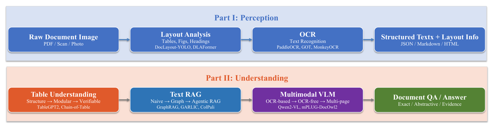
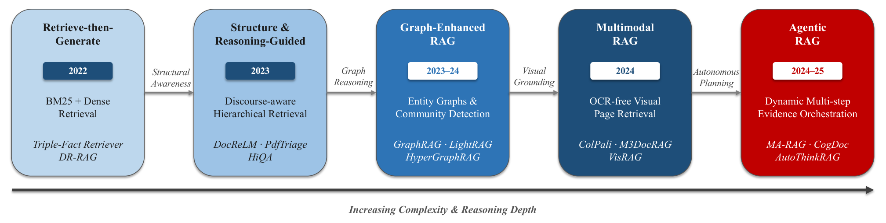
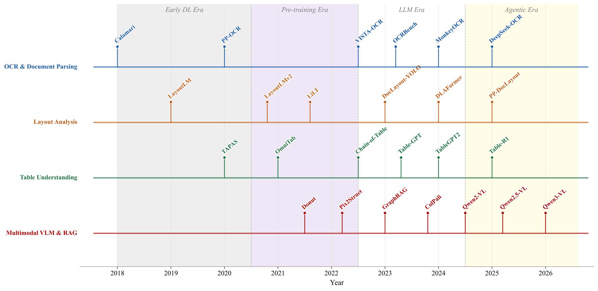
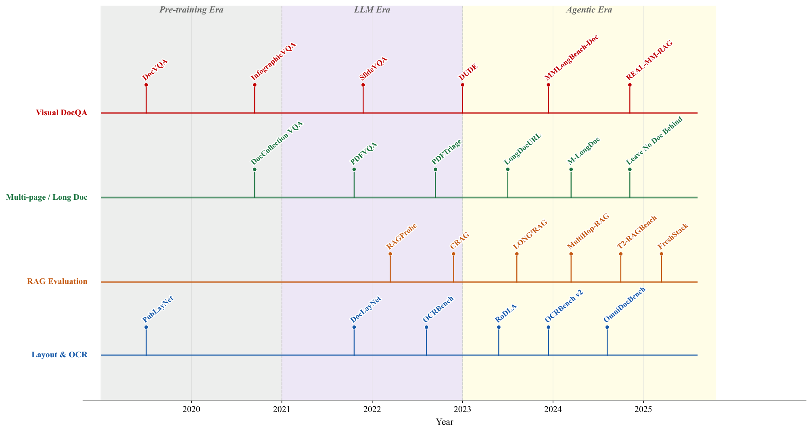
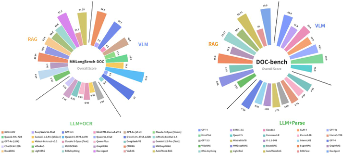

Survey Overview
A comprehensive review of document intelligence research, from traditional OCR pipelines to end-to-end multimodal foundation models.
🌎 Research Pipeline
Document Intelligence follows a two-stage paradigm: perception (layout analysis + OCR) followed by reasoning (table QA, text RAG, multimodal VLM). Modern systems are shifting toward end-to-end unified models.

🚀 Evolution Timeline
💡 Key Contributions
1. Structured Taxonomy: Systematic organization along perception and reasoning dimensions.
2. Technical Depth: Traces evolution from heuristic methods through deep learning to LLM/VLM-based approaches.
3. Evaluation Perspective: Comprehensive benchmarks spanning single-page to multi-page, synthetic to real-world.
Document Layout Analysis & OCR
The perception stage: converting visual documents into structured, machine-readable representations.
📐 Geometric Structure Detection
Early approaches treated layout analysis as a computer vision problem. The deep learning era brought object detection architectures to document layout.
Document Spectrum
Characterized page structure from a signal processing perspective.
VSR Framework
Fused vision, semantics, and relation modules.
DocLayout-YOLO
Balanced speed and accuracy with synthetic data.
LD-DOC
Lightweight domain-adaptive methods.
🤖 Layout-Aware Representation Learning
Modern approaches integrate layout information directly into representation learning. LayoutLM pioneered joint modeling of text and 2D position.
LayoutLM
Pioneered joint text + 2D position modeling.
ERNIE-Layout
Explicit spatial and structural relationships.
DocLLM
Layout directly influences attention.
LayoutLLM
Active layout consideration during generation.
🔍 OCR Evolution
Four-stage evolution from rule-based methods to VLM-based OCR.


📈 Layout Analysis & OCR Evaluation
Evaluation evolved from task-driven to data-driven approaches. Key benchmarks include DocVQA, PubLayNet, DocLayNet, OCRBench, and OmniDocBench.
Table Understanding & Question Answering
Tables encode structured relational data with implicit row-column dependencies and cell-level semantics.
🗃 Structure-Aware Modeling
Early research recognized that simple table linearization weakened row-column relationship modeling. Intermediate pre-training approaches significantly improved capabilities.
OmniTab
Large-scale intermediate pre-training for table structures.
SoarGraph
Graph-structured representations for cross-modal dependencies.
ReasTAP
Integrated table reasoning skills during pre-training.
FORTAP
Leveraged spreadsheet formulas for numerical reasoning.
⚙ Generation Enhancement & Modular Reasoning
Research shifted toward leveraging LLM generative capabilities through modular and decomposed strategies.
Table-GPT
Table-tuning on general-purpose LLMs.
Chain-of-Table
Evolving tables in the reasoning chain.
DePlot
Visual language reasoning through plot-to-table translation.
TabSQLify
Decomposed large tables into question-relevant sub-tables.
📊 Three-Stage Evolution

Text-Based Retrieval-Augmented Generation
Addressing context length limitations and hallucinations through retrieval-augmented generation.
📖 Five-Stage RAG Evolution
RAG paradigms have evolved through five stages: retrieve-then-generate, structure-guided, graph-enhanced, multimodal, and agentic RAG.

🔧 Key Methods
GraphRAG
Graph-enhanced retrieval using knowledge graphs and community detection.
LightRAG
Lightweight dual-level index architecture.
HyperGraphRAG
Hypergraph structures for n-ary relations.
BookRAG
BookIndex fusing logical hierarchy trees and entity-relationship graphs.
🛠 End-to-End Document QA
Beyond retrieval-augmented approaches, end-to-end document QA has evolved through attention mechanisms, graph-based reasoning, and LLM-era methods.
Vision-Language Models for Document Understanding
VLMs have propelled visual document understanding from single-modality analysis toward unified multimodal modeling.
📡 Foundational Models
Early research established technical foundations for document image classification and cross-modal retrieval.
LayoutXLM
Multimodal pre-training for multilingual visually-rich documents.
Donut
End-to-end document understanding without OCR systems.
Pix2Struct
OCR-free VLM based on screenshot parsing pre-training.
Monkey
Systematic study of image resolution and text label quality.
📷 OCR-Free and Multi-Page Context
OCR-free models utilize joint vision-language modeling, taking raw document images as direct input.


🚀 Modern Evolution (2025-2026)
Explosive development of ultra-lightweight models: DocSLM, SmolDocling, Baseer, and Semantic Document Derendering.
Evaluation & Benchmarks
Performance evaluation in complex document processing and RAG tasks.
🎯 Visual Document Understanding
DocQA research focuses on whether models can correctly understand text, layout, and visual cues from single-page or small-scale documents.
DocVQA
Systematic question answering on document images.
InfographicVQA
Infographic QA for complex layouts, charts, and text.
PDFVQA
Real PDF documents requiring multi-page evidence location.
DUDE / DLUE
Comprehensive evaluation for visually rich long documents.
📊 Benchmark Landscape

📈 RAG Evaluation
RAG-oriented evaluation explored complex question forms and systematic frameworks: RAGProbe, CRAG, LONG2RAG, and domain-specific benchmarks.
Figure Gallery
All figures from the survey paper. Click to enlarge.

